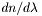
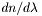
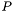
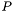

spcprm Struct Reference
Spectral transformation parameters. More...
#include <spc.h>
Data Fields | |
| int | flag |
| char | type [8] |
| char | code [4] |
| double | crval |
| double | restfrq |
| double | restwav |
| double | pv [7] |
| double | w [6] |
| int | isGrism |
| int | padding |
| int(* | spxX2P )(SPX_ARGS) |
| int(* | spxP2S )(SPX_ARGS) |
| int(* | spxS2P )(SPX_ARGS) |
| int(* | spxP2X )(SPX_ARGS) |
Detailed Description
The spcprm struct contains information required to transform spectral coordinates. It consists of certain members that must be set by the user (given) and others that are set by the WCSLIB routines (returned). Some of the latter are supplied for informational purposes while others are for internal use only.Field Documentation
| int spcprm::flag |
| char spcprm::type |
(Given) Four-letter spectral variable type, e.g "ZOPT" for CTYPEia = 'ZOPT-F2W'. (Declared as char[8] for alignment reasons.)
| char spcprm::code |
(Given) Three-letter spectral algorithm code, e.g "F2W" for CTYPEia = 'ZOPT-F2W'.
| double spcprm::crval |
(Given) Reference value (CRVALia), SI units.
| double spcprm::restfrq |
(Given) The rest frequency [Hz], and ...
| double spcprm::restwav |
(Given) ... the rest wavelength in vacuo [m], only one of which need be given, the other should be set to zero. Neither are required if the  and
and  spectral variables are both wave-characteristic, or both velocity-characteristic, types.
spectral variables are both wave-characteristic, or both velocity-characteristic, types.
| double spcprm::pv |
(Given) Grism parameters for 'GRI' and 'GRA' algorithm codes:
-
0:
 , grating ruling density.
, grating ruling density. -
1:
 , interference order.
, interference order. -
2:
 , angle of incidence [deg].
, angle of incidence [deg]. -
3:
 , refractive index at the reference wavelength,
, refractive index at the reference wavelength,  .
. -
4:
 ,  at the reference wavelength, (/m).
,  at the reference wavelength, (/m). -
5:
 , grating tilt angle [deg].
, grating tilt angle [deg]. -
6:
 , detector tilt angle [deg].
, detector tilt angle [deg].
The remaining members of the spcprm struct are maintained by spcset() and must not be modified elsewhere:
| double spcprm::w |
(Returned) Intermediate values:
- 0: Rest frequency or wavelength (SI).
-
1: The value of the -type spectral variable at the reference point (SI units).
-
2:
 at the reference point (SI units).
at the reference point (SI units).
| int spcprm::isGrism |
(Returned) Grism coordinates?
- 0: no,
- 1: in vacuum,
- 2: in air.
| int spcprm::padding |
(An unused variable inserted for alignment purposes only.)
(Returned) The first and ...
(Returned) ... the second of the pointers to the transformation functions in the two-step algorithm chain  in the pixel-to-spectral direction where the non-linear transformation is from to . The argument list, SPX_ARGS, is defined in spx.h.
in the pixel-to-spectral direction where the non-linear transformation is from to . The argument list, SPX_ARGS, is defined in spx.h.
(Returned) The first and ...
(Returned) ... the second of the pointers to the transformation functions in the two-step algorithm chain  in the spectral-to-pixel direction where the non-linear transformation is from to . The argument list, SPX_ARGS, is defined in spx.h.
in the spectral-to-pixel direction where the non-linear transformation is from to . The argument list, SPX_ARGS, is defined in spx.h.